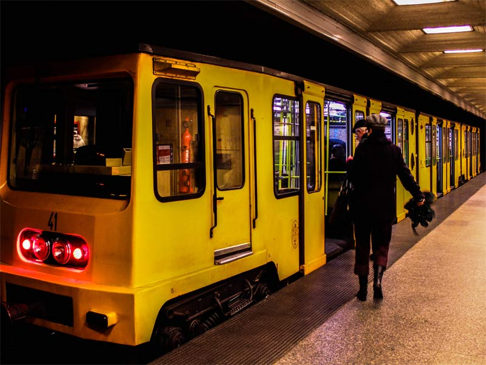

Some sights
№1

First of all, it is Budapest parlament. You can find one of the best views on parlament from Batthyány tér.
First of all, it is Budapest parlament. You can find one of the best views on parlament from Batthyány tér.
Almost national Hungarian food is Beef Goulash. You can find this dish everywhere in Hungary.
There are a lot of different kinds of public transport in Budapest. You can use 4 metro-lines and the yellow line is the oldest line in Europe.
As for me, the best time to visit Budapest is spring. It is warm but not hot. Besides, there are a lot of flowers.